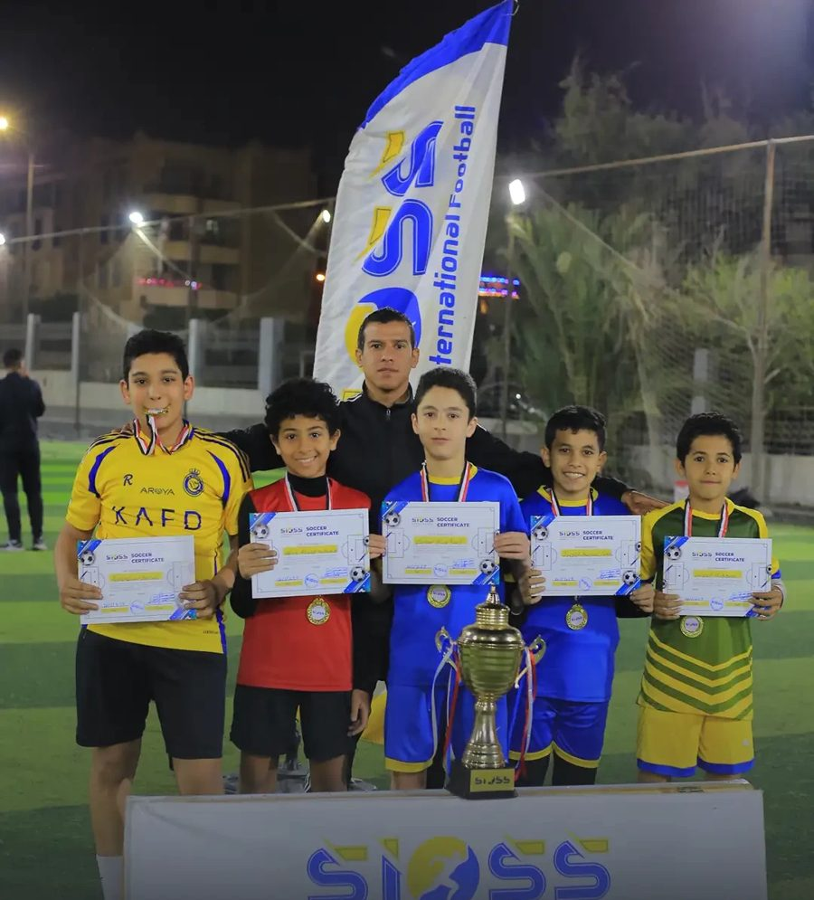

برنامج اعتماد الأكاديميات · من السويد
افتح أكاديمية كرة قدم معتمدة من SIOSS في مدينتك
نمنح المؤسسات والمدربين الطموحين إذناً رسمياً لافتتاح أكاديمية تحمل اسم SIOSS International Football Academy، بمنهج تدريبي سويدي، وتأهيل للمدربين، ودعم إعلامي وفني متواصل. نجحت التجربة في مصر بسبعة فروع، ونفتح الآن الباب في السعودية ودول الخليج والعراق وبقية الدول العربية.

7 فروعفي القاهرة الكبرى بمصر
3 – 15 سنةبرامج للبنين والبنات
مباريات كبرىمع أكاديميات الأهلي وبيراميدز
لاعبون محترفونمنهم في نادي العين الإماراتي